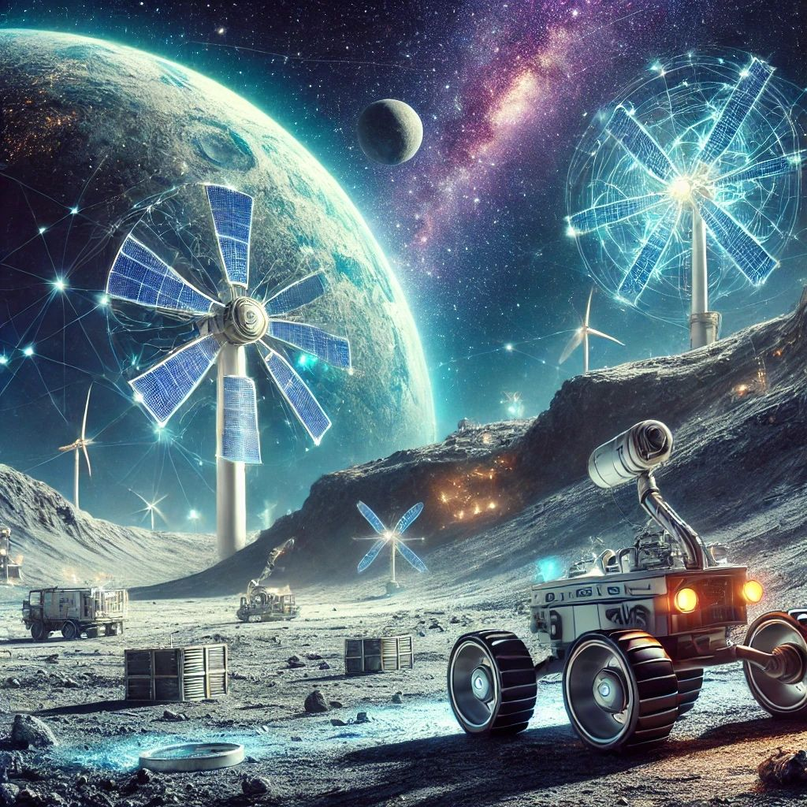

🌍🚀 מצאו אנרגיה על הירח!
פורסם במקור ב LinkedIn
🌍🚀 מצאו אנרגיה על הירח!
שיתוף פעולה היסטורי בין חברת חלל יפנית לחברת כרייה מהווה נקודת מפנה עולמית באנרגיה
בבשורה שעשויה לשנות את כללי המשחק בתחום האנרגיה, חברת החלל היפנית ispace וחברת הכרייה הבינלאומית Magna Petra הכריזו על פרויקט לחקר כריית הליום-3 מאדמת הירח.
איזוטופ נדיר זה, הנחשב לדלק אידיאלי להיתוך גרעיני, עשוי לספק מקור אנרגיה נקי, בטוח ובעל פוטנציאל עצום לעתיד האנושות.
💡 למה הליום-3?
• תהליך היתוך גרעיני ללא פליטת קרינה מסוכנת.
• משאב נדיר בכדור הארץ, אך מצוי בשפע באדמת הירח, שהייתה “מאגר טבעי” להליום-3 במשך מיליארדי שנים.
🌌 מה הלאה?
בתחילת 2025 תשוגר החללית “רזיליאנס”, שתבצע ניסוי ראשון מסוגו להפקת הליום-3 מהירח. הצלחה במשימה עשויה לפתוח עידן חדש של כלכלה מבוססת חלל ולהביא לפריצת דרך במציאת פתרונות אנרגיה נקייה ויציבה עבור כדור הארץ.
העולם צועד לעתיד שבו משאבים מהירח הופכים למציאות, ועם שחקנים כמו ispace ו-Magna Petra בחזית, ייתכן שהעתיד הזה קרוב יותר משחשבנו.
אנחנו בעיצומו של עידן מרגש שבו האנושות חווה קפיצות דרך חסרות תקדים. פיתוח אנרגיה נקייה ובעלת תפוקה גבוהה מצטרף להישגים מהפכניים כמו בינה מלאכותית ומחשוב קוונטי, המעצבים יחד את עתידנו.
